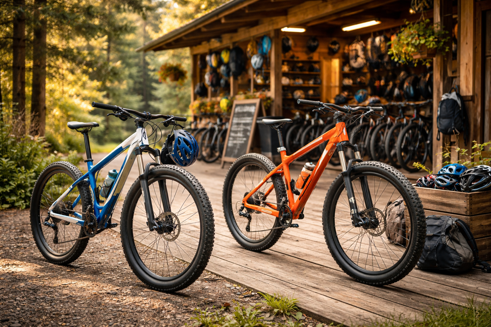
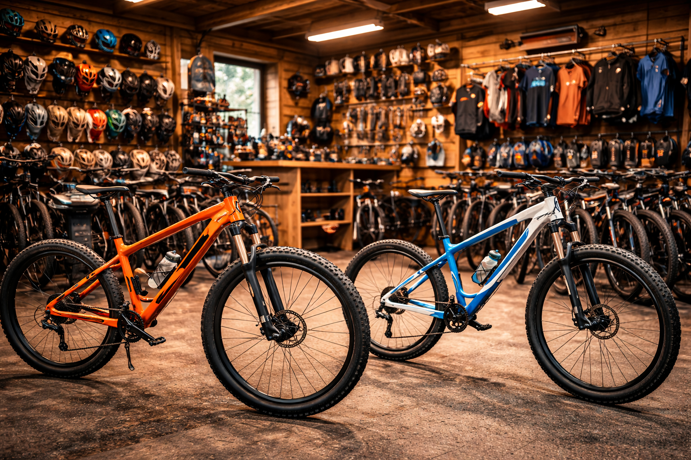
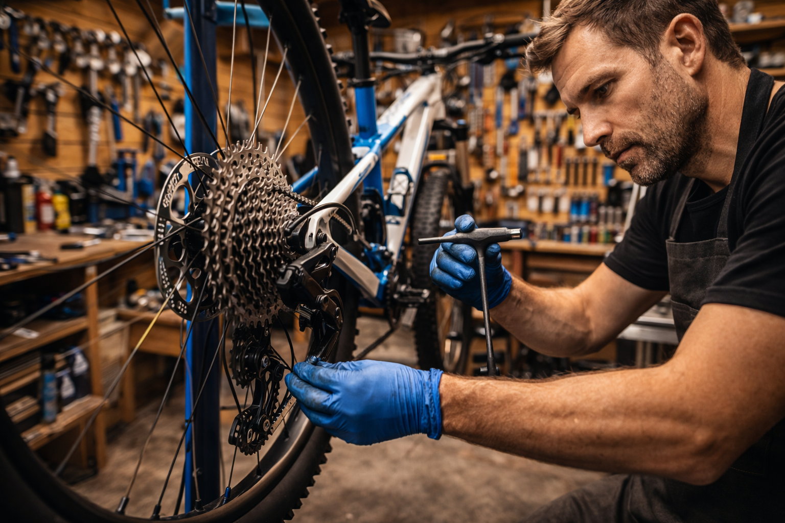

Bike Hire
We have more than 100 hire bikes available, including top-end demo models, full suspension trail bikes, hardtails, kids bikes and tagalongs for family rides.
Wilderness Forest is a mountain biking Mecca deep in the heart of the stunning Borders. The biking experience here includes Green, Blue, Red or Black graded trails, as well as a magnificent multi-graded free-ride area. In the unlikely event that Wilderness fails to meet your thirst for biking exhilaration, you are only a short hop from Innerleithen's famous Red Bull downhill and cross-country trails.
We have more than 100 hire bikes available at Bike King Borders, including top end demo models, full suspension trail bikes, hard-tails, kids bikes and tagalongs so we have something for all the family.
With brand new bikes in stock from top quality brands like Trek, Orange, Genesis and Santa Cruz and an extensive range of clothing and accessories from Gore Bike Wear, Endura, Shimano, Hope and Bontrager, the shop caters for all visitors to the forest.
Full repair and servicing facilities are onsite to take care of any mechanical problems that occur on the trail.
Our qualified staff will keep you riding for as long as possible. Our team are all experienced riders and know the trails well — ask their advice on the best routes and current conditions.
Easy access to Wilderness Forest routes for beginners and experienced riders.
Droncar has an easy access route from the picnic site that’s firm and level, with no obstacles.
If you are looking for something more energetic, follow the burn further up the valley or find the remains of Droncar Tower and an Iron Age hill fort.
Muirdac is a hidden gem, a quiet forest close to Peebles with some charming trails through open woodland. It can be particularly good early in the morning, when mist hangs in the valley below.
Enjoy a picnic and a stroll at Leethorn: the meadows here are important for butterflies, and we manage the land so the conditions are just right for them.
If you are looking for a bit of a challenge, head to Airy. One of the Borders’ classic hill routes leads through the forest and up to the Three Renbreths, tall cairns that stand sentinel over the moors. Allow at least five hours for the trip.

We have more than 100 hire bikes available, including top-end demo models, full suspension trail bikes, hardtails, kids bikes and tagalongs for family rides.

We stock bikes from Trek, Orange, Genesis and Santa Cruz, plus clothing and accessories from brands including Gore Bike Wear, Endura, Shimano, Hope and Bontrager.

Our qualified staff provide gear, brake and wheel servicing. We focus on the needs of your bike rather than fixed workshop packages.